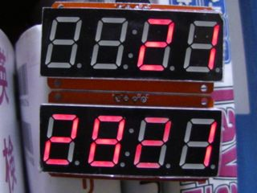

SSHでプロセスを起動したままにしておく方法
ドンピシャの参考サイト
シェルによってもやり方が変わる。自分はbash
やってみる
C:\Users\usaku>ssh pi@192.168.3.6
pi@192.168.3.6's password:******
Linux raspberrypi 4.14.71-v7+ #1145 SMP Fri Sep 21 15:38:35 BST 2018 armv7l
The programs included with the Debian GNU/Linux system are free software;
the exact distribution terms for each program are described in the
individual files in /usr/share/doc/*/copyright.
Debian GNU/Linux comes with ABSOLUTELY NO WARRANTY, to the extent
permitted by applicable law.
Last login: Tue Dec 4 16:14:09 2018 from 192.168.3.2
pi@raspberrypi:~
$ cdht
合計 48
drwxr-xr-x 3 pi pi 4096 12月 4 16:17 .
drwxr-xr-x 3 pi pi 4096 11月 29 20:51 ..
drwxr-xr-x 8 pi pi 4096 12月 4 15:29 .git
-rw-r--r-- 1 pi pi 1203 11月 29 20:59 .gitignore
-rw-r--r-- 1 pi pi 4110 12月 4 15:29 CHANGELOG.md
-rw-r--r-- 1 pi pi 1065 11月 29 20:59 LICENSE
-rw-r--r-- 1 pi pi 296 12月 1 17:17 README.md
-rw-r--r-- 1 pi pi 6 12月 4 15:29 VERSION
-rw-r--r-- 1 pi pi 2693 12月 4 15:29 ht16k33.py
-rw------- 1 pi pi 26 12月 4 16:16 nohup.out
-rwx------ 1 pi pi 133 11月 21 22:18 seg.sh
pi@raspberrypi:~/src/i2c/i2c_4dig7seg(release-1.2)
$ nohup python3 ht16k33.py 1 < /dev/null 2>&1 /dev/null &
[1] 32286
nohup: 出力を 'nohup.out' に追記します
pi@raspberrypi:~/src/i2c/i2c_4dig7seg(release-1.2)
$ exit
ログアウト
Connection to 192.168.3.6 closed.

ログアウトしても、時計は動き続けました。
がらめきドットコムPowered by RaspberryPi3B+ Raspbian stretch